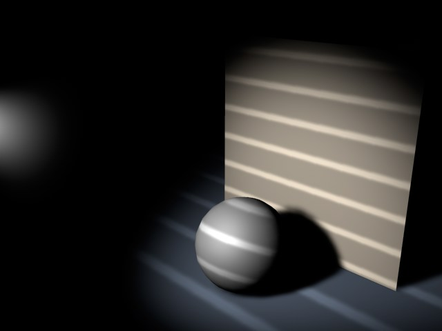

Function available in CINEMA 4D Prime, Visualize, Broadcast, Studio & BodyPaint 3D
 灯光
灯光
灯光
在 CINEMA 4D 中新建场景时，会使用一个默认的灯光，它被称为自动灯光。要改变默认灯光，可以新建一个只包含你所想要的灯光的场景，然后将它以new.c4d的名称保存在 CINEMA 4D 文件夹中。这样以后每次你新建场景时就会使用这个灯光设置作为默认灯光。
你还可以在new.c4d文件中保存其他环境属性（天空、地面、环境等等）（详见特定的初始文件）。
当你在动画中关闭灯光时， CINEMA 4D 会自动打开默认灯光，除非在渲染设置的选项页面关闭了默认灯光。
在视窗中显示灯光
在视窗中选择光影着色选项就可以预览灯光效果了。这个选项会实时显示灯光，当移动灯光时会调整灯光并更新场景。
要改变灯光的名称，可以在对象管理器中双击灯光的名称，然后输入新名称。
创建灯光
要创建灯光，可以从

在创建目标聚光灯时，会出现一个光源和一个空对象，空对象即灯光的目标。这个光源可以是任意类型的灯光，而且你可以将空对象移动到灯光所要照射对象的层级中作为其子对象，这样，当你移动对象时，灯光就会自动跟随它了。
制作 Gel
Gel（也被称为灯光贴图）是通过给光源添加一个透明贴图材质来制作的。
这时灯光的照射区域会被这个贴图过滤，就像投影仪投射图片一样。例如，给一个光源添加一个黑白条纹的贴图可以模拟百叶窗的条纹状投影。
你可以给每个灯光添加任意数量的贴图。
灯光不会使用父对象的纹理标签。
